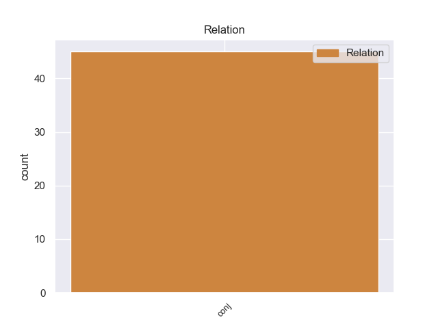
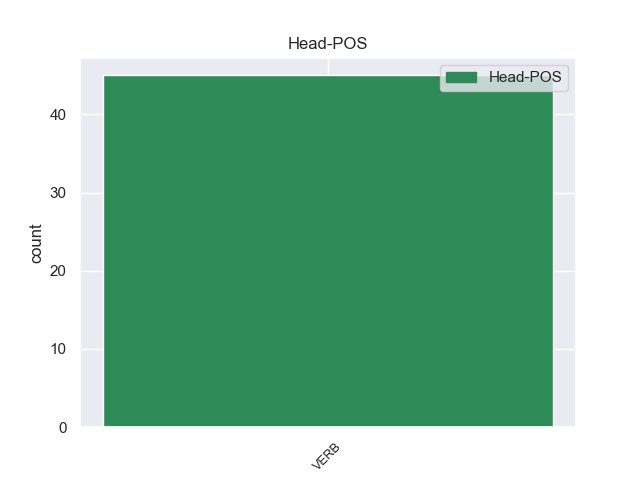
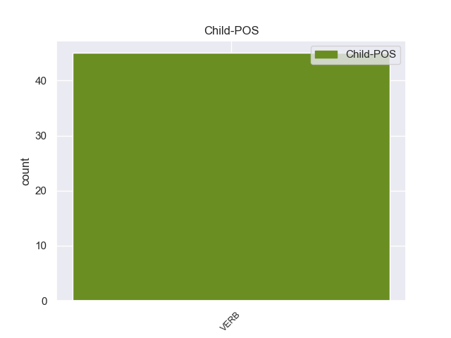

Distribution of features within this leaf



Agreement Rules sorted by frequency.
- When the dependent token is the conjunct(conj) of the head token, and the dependent token is VERB.
1 Εδώ _ _ _ _ 0 _ _ _
2 και _ _ _ _ 0 _ _ _
3 ενάμισι _ _ _ _ 0 _ _ _
4 χρόνο _ _ _ _ 0 _ _ _
5 κοιτάζουμε κοιτάζουμε VERB _ Aspect=Imp|Mood=Ind|Number=Sing|Person=3|Tense=Pres|VerbForm=Fin|Voice=Act 0 _ _ _
6 άπραγοι _ _ _ _ 0 _ _ _
7 τον _ _ _ _ 0 _ _ _
8 εντελώς _ _ _ _ 0 _ _ _
9 άνισο _ _ _ _ 0 _ _ _
10 πόλεμο _ _ _ _ 0 _ _ _
11 που _ _ _ _ 0 _ _ _
12 διεξάγουν _ _ _ _ 0 _ _ _
13 αυτοί _ _ _ _ 0 _ _ _
14 οι _ _ _ _ 0 _ _ _
15 δύο _ _ _ _ 0 _ _ _
16 αντίπαλοι _ _ _ _ 0 _ _ _
17 μεταξύ _ _ _ _ 0 _ _ _
18 τους _ _ _ _ 0 _ _ _
19 , _ _ _ _ 0 _ _ _
20 κοιτάζουμε κοιτάζουμε VERB _ Aspect=Imp|Mood=Ind|Number=Plur|Person=3|Tense=Pres|VerbForm=Fin|Voice=Act 5 conj _ _
21 τα _ _ _ _ 0 _ _ _
22 τανκς _ _ _ _ 0 _ _ _
23 των _ _ _ _ 0 _ _ _
24 Ισραηλινών _ _ _ _ 0 _ _ _
25 να _ _ _ _ 0 _ _ _
26 καταστρέφουν _ _ _ _ 0 _ _ _
27 σπίτια _ _ _ _ 0 _ _ _
28 και _ _ _ _ 0 _ _ _
29 να _ _ _ _ 0 _ _ _
30 σκοτώνουν _ _ _ _ 0 _ _ _
31 παλαιστίνιους _ _ _ _ 0 _ _ _
32 πολίτες _ _ _ _ 0 _ _ _
33 . _ _ _ _ 0 _ _ _
Disagree Examples:
1 Ανακοίνωση _ _ _ _ 0 _ _ _
2 των _ _ _ _ 0 _ _ _
3 γιατρών _ _ _ _ 0 _ _ _
4 της _ _ _ _ 0 _ _ _
5 Χίλαρι _ _ _ _ 0 _ _ _
6 Κλίντον _ _ _ _ 0 _ _ _
7 αναφέρει αναφέρω VERB VERB Aspect=Imp|Mood=Ind|Number=Sing|Person=3|Tense=Pres|VerbForm=Fin|Voice=Act 0 _ _ _
8 ότι _ _ _ _ 0 _ _ _
9 " _ _ _ _ 0 _ _ _
10 η _ _ _ _ 0 _ _ _
11 κατάσταση _ _ _ _ 0 _ _ _
12 της _ _ _ _ 0 _ _ _
13 υγείας _ _ _ _ 0 _ _ _
14 της _ _ _ _ 0 _ _ _
15 Υπουργού _ _ _ _ 0 _ _ _
16 Εξωτερικών _ _ _ _ 0 _ _ _
17 βελτιώνεται _ _ _ _ 0 _ _ _
18 και _ _ _ _ 0 _ _ _
19 εξέφρασαν εκφράζω VERB VERB Aspect=Perf|Mood=Ind|Number=Plur|Person=3|Tense=Past|VerbForm=Fin|Voice=Act 7 conj _ _
20 την _ _ _ _ 0 _ _ _
21 πεποίθηση _ _ _ _ 0 _ _ _
22 ότι _ _ _ _ 0 _ _ _
23 θα _ _ _ _ 0 _ _ _
24 ανακάμψει _ _ _ _ 0 _ _ _
25 πλήρως _ _ _ _ 0 _ _ _
26 . _ _ _ _ 0 _ _ _
1 Μπορεί μπορώ VERB VERB Aspect=Imp|Mood=Ind|Number=Sing|Person=3|Tense=Pres|VerbForm=Fin|Voice=Act 0 _ _ _
2 να _ _ _ _ 0 _ _ _
3 θέλουμε _ _ _ _ 0 _ _ _
4 να _ _ _ _ 0 _ _ _
5 αυξήσουμε _ _ _ _ 0 _ _ _
6 τις _ _ _ _ 0 _ _ _
7 κοινωνικές _ _ _ _ 0 _ _ _
8 του _ _ _ _ 0 _ _ _
9 επιβαρύνσεις _ _ _ _ 0 _ _ _
10 - _ _ _ _ 0 _ _ _
11 και _ _ _ _ 0 _ _ _
12 πολλοί _ _ _ _ 0 _ _ _
13 συνάδελφοι _ _ _ _ 0 _ _ _
14 εδώ _ _ _ _ 0 _ _ _
15 θα _ _ _ _ 0 _ _ _
16 ήθελαν θέλω VERB VERB Aspect=Imp|Mood=Ind|Number=Plur|Person=3|Tense=Past|VerbForm=Fin|Voice=Act 1 conj _ _
17 να _ _ _ _ 0 _ _ _
18 το _ _ _ _ 0 _ _ _
19 κάνουν _ _ _ _ 0 _ _ _
20 . _ _ _ _ 0 _ _ _
1 Η _ _ _ _ 0 _ _ _
2 Αλυκή _ _ _ _ 0 _ _ _
3 που _ _ _ _ 0 _ _ _
4 πήρε πήρε VERB _ Aspect=Imp|Mood=Ind|Number=Sing|Person=3|Tense=Pres|VerbForm=Fin|Voice=Act 0 _ _ _
5 το _ _ _ _ 0 _ _ _
6 όνομά _ _ _ _ 0 _ _ _
7 της _ _ _ _ 0 _ _ _
8 από _ _ _ _ 0 _ _ _
9 την _ _ _ _ 0 _ _ _
10 παραφθορά _ _ _ _ 0 _ _ _
11 του _ _ _ _ 0 _ _ _
12 ονόματος _ _ _ _ 0 _ _ _
13 της _ _ _ _ 0 _ _ _
14 Αλίκης _ _ _ _ 0 _ _ _
15 , _ _ _ _ 0 _ _ _
16 βασίλισσας _ _ _ _ 0 _ _ _
17 της _ _ _ _ 0 _ _ _
18 χερσονήσου _ _ _ _ 0 _ _ _
19 αυτής _ _ _ _ 0 _ _ _
20 κατά _ _ _ _ 0 _ _ _
21 την _ _ _ _ 0 _ _ _
22 παράδοση _ _ _ _ 0 _ _ _
23 , _ _ _ _ 0 _ _ _
24 βρίσκεται _ _ _ _ 0 _ _ _
25 σ _ _ _ _ 0 _ _ _
26 το _ _ _ _ 0 _ _ _
27 νότιοδυτικό _ _ _ _ 0 _ _ _
28 τμήμα _ _ _ _ 0 _ _ _
29 της _ _ _ _ 0 _ _ _
30 Θάσου _ _ _ _ 0 _ _ _
31 και _ _ _ _ 0 _ _ _
32 ήκμασε ήκμασε VERB _ Aspect=Perf|Mood=Ind|Number=Plur|Person=3|Tense=Past|VerbForm=Fin|Voice=Act 4 conj _ _
33 κατά _ _ _ _ 0 _ _ _
34 την _ _ _ _ 0 _ _ _
35 αρχαιότητα _ _ _ _ 0 _ _ _
36 κυρίως _ _ _ _ 0 _ _ _
37 λόγω _ _ _ _ 0 _ _ _
38 της _ _ _ _ 0 _ _ _
39 εξόρυξης _ _ _ _ 0 _ _ _
40 μαρμάρων _ _ _ _ 0 _ _ _
41 . _ _ _ _ 0 _ _ _
1 Συμμερίζομαι συμμερίζομαι VERB _ Aspect=Imp|Mood=Ind|Number=Sing|Person=1|Tense=Pres|VerbForm=Fin|Voice=Act 0 _ _ _
2 επίσης _ _ _ _ 0 _ _ _
3 τα _ _ _ _ 0 _ _ _
4 λόγια _ _ _ _ 0 _ _ _
5 του _ _ _ _ 0 _ _ _
6 κ. _ _ _ _ 0 _ _ _
7 Watson _ _ _ _ 0 _ _ _
8 και _ _ _ _ 0 _ _ _
9 ζητώ ζητώ VERB _ Aspect=Perf|Mood=Ind|Number=Sing|Person=3|Tense=Past|VerbForm=Fin|Voice=Act 1 conj _ _
10 τα _ _ _ _ 0 _ _ _
11 όργανα _ _ _ _ 0 _ _ _
12 συνεργασίας _ _ _ _ 0 _ _ _
13 σε _ _ _ _ 0 _ _ _
14 ποινικές _ _ _ _ 0 _ _ _
15 υποθέσεις _ _ _ _ 0 _ _ _
16 να _ _ _ _ 0 _ _ _
17 περάσουν _ _ _ _ 0 _ _ _
18 σ _ _ _ _ 0 _ _ _
19 τον _ _ _ _ 0 _ _ _
20 πρώτο _ _ _ _ 0 _ _ _
21 πυλώνα _ _ _ _ 0 _ _ _
22 . _ _ _ _ 0 _ _ _
1 Μέλη _ _ _ _ 0 _ _ _
2 της _ _ _ _ 0 _ _ _
3 Επιτροπής _ _ _ _ 0 _ _ _
4 Μετανάστευσης _ _ _ _ 0 _ _ _
5 του _ _ _ _ 0 _ _ _
6 Συμβουλίου _ _ _ _ 0 _ _ _
7 της _ _ _ _ 0 _ _ _
8 Ευρώπης _ _ _ _ 0 _ _ _
9 ταξίδεψαν ταξίδεψαν VERB _ Aspect=Perf|Mood=Ind|Number=Sing|Person=3|Tense=Past|VerbForm=Fin|Voice=Act 0 _ _ _
10 σ _ _ _ _ 0 _ _ _
11 την _ _ _ _ 0 _ _ _
12 Ελλάδα _ _ _ _ 0 _ _ _
13 , _ _ _ _ 0 _ _ _
14 σ _ _ _ _ 0 _ _ _
15 τον _ _ _ _ 0 _ _ _
16 Έβρο _ _ _ _ 0 _ _ _
17 , _ _ _ _ 0 _ _ _
18 από _ _ _ _ 0 _ _ _
19 όπου _ _ _ _ 0 _ _ _
20 πέρασαν _ _ _ _ 0 _ _ _
21 το _ _ _ _ 0 _ _ _
22 2010 _ _ _ _ 0 _ _ _
23 , _ _ _ _ 0 _ _ _
24 132524 _ _ _ _ 0 _ _ _
25 παράνομοι _ _ _ _ 0 _ _ _
26 μετανάστες _ _ _ _ 0 _ _ _
27 , _ _ _ _ 0 _ _ _
28 επισκέφτηκαν _ _ _ _ 0 _ _ _
29 τα _ _ _ _ 0 _ _ _
30 κέντρα _ _ _ _ 0 _ _ _
31 κράτησης _ _ _ _ 0 _ _ _
32 , _ _ _ _ 0 _ _ _
33 είδαν _ _ _ _ 0 _ _ _
34 την _ _ _ _ 0 _ _ _
35 κατάσταση _ _ _ _ 0 _ _ _
36 σ _ _ _ _ 0 _ _ _
37 το _ _ _ _ 0 _ _ _
38 κέντρο _ _ _ _ 0 _ _ _
39 της _ _ _ _ 0 _ _ _
40 Αθήνας _ _ _ _ 0 _ _ _
41 , _ _ _ _ 0 _ _ _
42 μίλησαν _ _ _ _ 0 _ _ _
43 ελεύθερα _ _ _ _ 0 _ _ _
44 με _ _ _ _ 0 _ _ _
45 απελπισμένους _ _ _ _ 0 _ _ _
46 μετανάστες _ _ _ _ 0 _ _ _
47 και _ _ _ _ 0 _ _ _
48 πρόσφυγες _ _ _ _ 0 _ _ _
49 και _ _ _ _ 0 _ _ _
50 μέτρησαν _ _ _ _ 0 _ _ _
51 τον _ _ _ _ 0 _ _ _
52 όγκο _ _ _ _ 0 _ _ _
53 του _ _ _ _ 0 _ _ _
54 προβλήματος _ _ _ _ 0 _ _ _
55 , _ _ _ _ 0 _ _ _
56 ώστε _ _ _ _ 0 _ _ _
57 να _ _ _ _ 0 _ _ _
58 καταλήξουν καταλήξουν VERB _ Aspect=Imp|Mood=Ind|Number=Plur|Person=3|Tense=Pres|VerbForm=Fin|Voice=Act 9 conj _ _
59 να _ _ _ _ 0 _ _ _
60 πείσουν _ _ _ _ 0 _ _ _
61 με _ _ _ _ 0 _ _ _
62 την _ _ _ _ 0 _ _ _
63 έκθεσή _ _ _ _ 0 _ _ _
64 τους _ _ _ _ 0 _ _ _
65 την _ _ _ _ 0 _ _ _
66 ολομέλεια _ _ _ _ 0 _ _ _
67 να _ _ _ _ 0 _ _ _
68 υπερψηφίσει _ _ _ _ 0 _ _ _
69 το _ _ _ _ 0 _ _ _
70 ψήφισμα _ _ _ _ 0 _ _ _
71 . _ _ _ _ 0 _ _ _